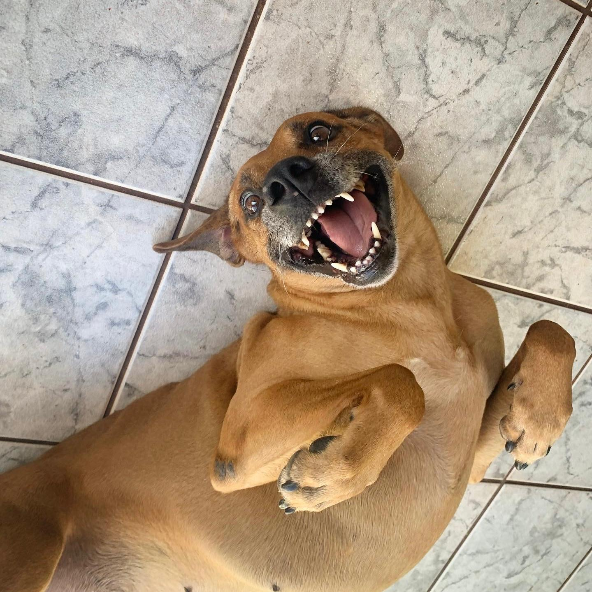

Loba's life

Loba was a stray dog that roamed around the university where my mother worked and I studied. After noticing she was in heat, we brought her home to take her to a veterinary clinic for spaying, so she wouldn't have puppies on the street. During her recovery from surgery, she stayed at home, and we realized she was a very gentle and playful dog. We tried to find an owner for her, but because she was a large dog, we couldn't find anyone willing to take her. In the end, we couldn't bring ourselves to return her to the street, so we ended up adopting her. This happened in 2014, and she has been with the family for 10 years now. She has always gotten along well with the whole family and other pets in the house.